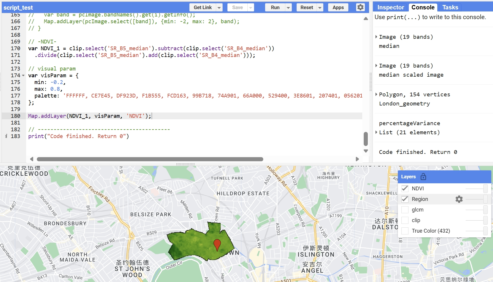

6 06 Google Earth Engine
Google Earth is a software that shows a 3D model of the Earth by using pictures from satellites, planes, and GIS (Geographic Information Systems) data on a 3D globe (Tamiminia et al. 2020). We can use devices to look around this digital world, including cities and landscapes, and they can even add their own information to it. It has images covering many areas of the Earth’s surface, including Street View pictures.
6.0.1 Contents in Google Earth Engine
In Google Earth Engine (GEE), raster data is presented as images with multiple bands, each detailing a specific attribute like reflectance for a given wavelength. Vector data, on the other hand, comprises Features or FeatureCollections, capturing discrete entities such as rivers, roads, or points of interest.
The JavaScript API, via the Code Editor, facilitates interactive data exploration and analysis. Instead of traditional loops, GEE uses mapping functions for iterating over collections like ImageCollection, performing operations on each element.
For another, GEE scales data to a 256x256 pixel grid, selecting the nearest pyramid layer for analysis and employing nearest neighbor for resampling by default.
6.0.2 Landset image processing
Zonal Statistics involves summarizing image data within specific zones or regions, with users applying
.reduceRegion()
// or apply median mosaic
.reduce(ee.Reducer.median())for statistical analysis (mean, median) within areas defined by geometries like polygons, aiding in fields such as agriculture or urban planning. Neighborhood reduction uses .reduceNeighborhood() to aggregate data around each pixel within a designated kernel, enhancing image smoothing and local analysis.
In regression analysis using Google Earth Engine (GEE), the linearFit() function facilitates linear regression on a per-pixel basis across images from multiple sensors, analyzing temporal changes. This least squares method requires a dependent and an independent variable band, typically time, allowing for temporal studies over years or spatial analysis within a specific polygon on a given date.
6.1 Application
6.1.1 Google Earth Engine for geo-big data applications and ethics concern
The study of Haifa et. al (Tamiminia et al. 2020) uses Google Earth Engine to track and study changes in land use within the Brazilian Amazon rainforest. This project relies on satellite images from Landsat and Sentinel-2 to observe deforestation and the deterioration of the forest. To categorize different types of land and notice changes over periods, advanced machine learning techniques, including Random Forest and Support Vector Machines can be used. The goal is to provide precise, current data on how the land is beingndefined used, which is crucial for keeping an eye on the environment and helping conservation efforts.
Stephen R.J. Sheppard* and Petr Cizek (Sheppard and Cizek 2009) explores the ethical implications of using Google Earth’s visualization capabilities. It delves into the risks and benefits associated with the participatory use of virtual globes by experts and laypeople. This paper (Sheppard and Cizek 2009) emphasizes the need for ethical frameworks and principles to guide the use of environmental visualisation techniques in the context of public policy and decision-making.
This contrast (Tamiminia et al. 2020; Sheppard and Cizek 2009)suggests a complementary relationship where ethical guidelines could enhance the responsible use of technologies like GEE in scientific and policy-making contexts.
6.1.2 Coding with GEE
Using GEE to see the NDVI performance in London Camden Town.
Upload and filter the target area (Camden Town with Primrose Hill) by ‘GSS_CODE’
var London = ee.FeatureCollection("projects/rs-prj-2309/assets/London_Ward") .filter('GSS_CODE == "E05000130"');Then load image collection and apply simple image processing
... = ee.ImageCollection(*) .filterDate('2023-04-03', '2023-10-03') .filterBounds(London); ... *.reduce(ee.Reducer.median());Finally calculate the value and add the layer to the map

NDVI view in camden
6.2 Refelction
After working through the given exercises, it is easily understood that, yep, Google Earth Engine (GEE) is indeed powerful for exploring spatial patterns and really great for going deeper into your datasets. The entire process ranged from file uploads of the shapefiles for Delhi and London to the filtering of data inside these shapefiles. This was represented graphically in a map through every step that was clear in its display, both editable and showed the differences in their layers. This feature shows the ability of GEE in the handling of complicated spatial data in an interactive and easy manner.
However, it is worth noting that there are downsides to the platform, especially on stability issues. Sometimes the service can be termed as unreliable, especially when uploading the shapefiles, which can prove quite frustrating. Except for this sometimes observed drawback, the utility and power of GEE for facilitation in studies concerning spatial analysis are enormous. It is a very rich set of tools that Google Earth Engine presents to every person who wants to make his first forays into spatial data analysis, with just a few issues about server stability.